貓咪奇遇記
只要路上遇到貓咪我都會盡全力的去給他摸摸，拍拍他們，記錄他們那可愛的臉。
 2018/02/16 回到嘉義過年，遇到了一隻可愛的小惡魔。
2018/02/16 回到嘉義過年，遇到了一隻可愛的小惡魔。

 2018/12/09 堂哥家的小貓咪。
2018/12/09 堂哥家的小貓咪。

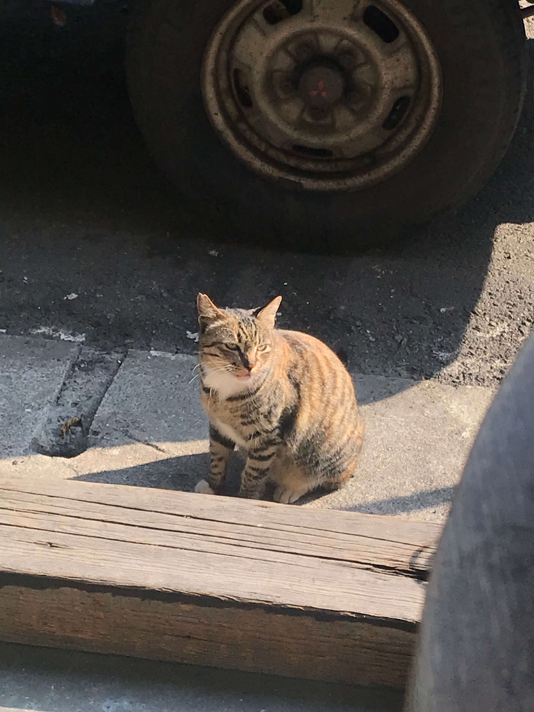2018/04/09 與朋友在高雄的咖啡廳遇到的一隻母貓，只記得那天好熱啊，還有店員很漂亮。
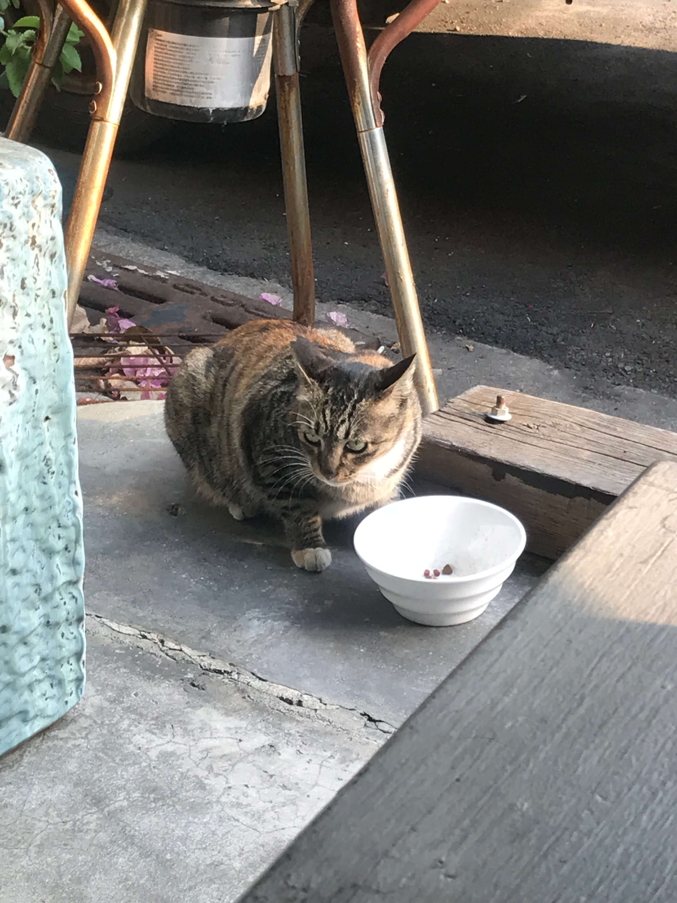
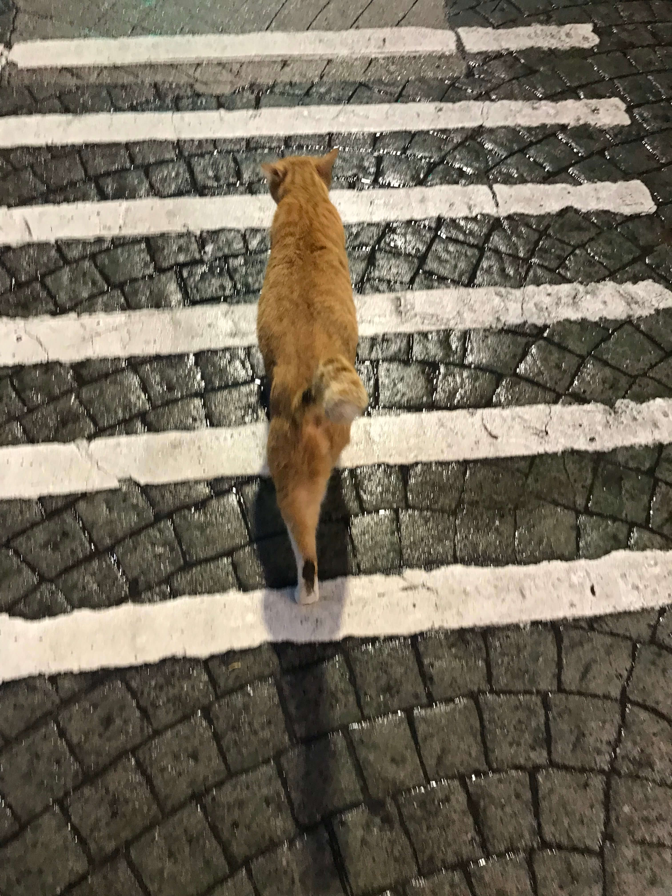2018/04/12 在台北的街頭遇到了一隻很可愛熱情又黏人的橘貓，反觀台北人的個性，真諷刺，好啦給你放三張版面。
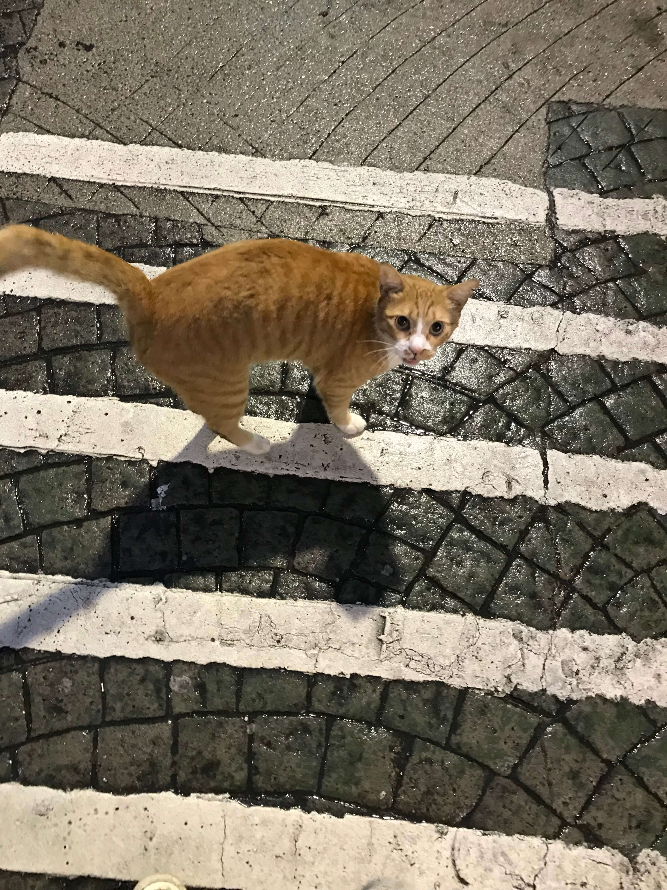

2018/04/23 朋友家的小黑貓，養了好幾年了是隻老貓。
2018/12/09 高雄路上的橘貓。
 2018/05/16 高雄果貿社區裡的三花貓，一直討摸。
2018/05/16 高雄果貿社區裡的三花貓，一直討摸。

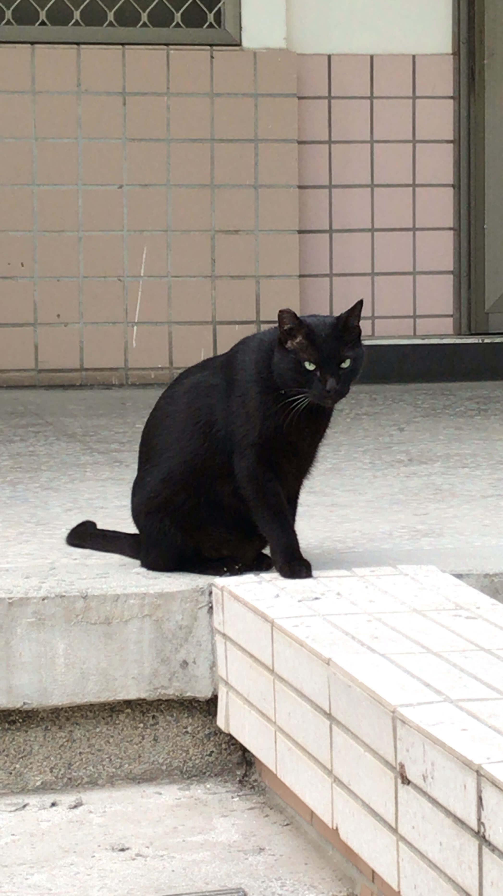2018/10/24 台南大學裡的一隻黑貓，非常的兇，很難親近。
 Date:Unknown 很可愛的橘貓，看似還很小。
Date:Unknown 很可愛的橘貓，看似還很小。
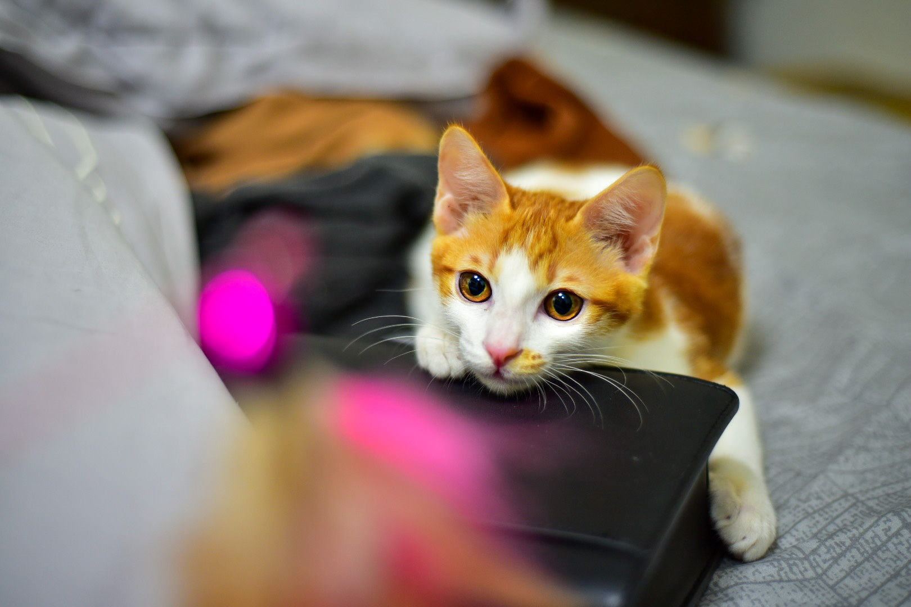
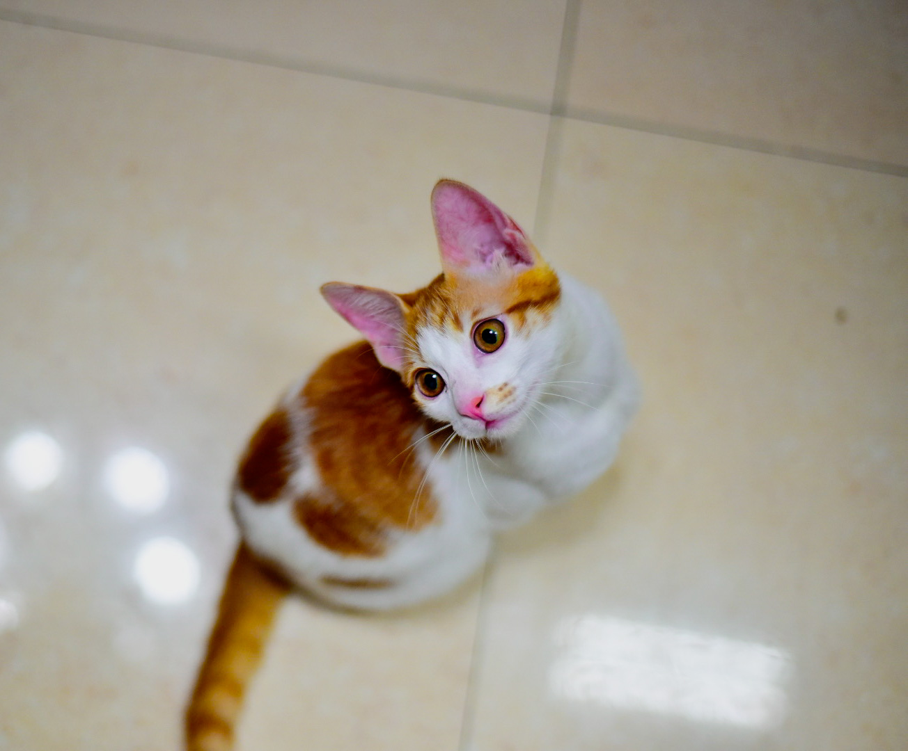
 Date:Unknownq 米克斯。
Date:Unknownq 米克斯。
 Date:Unknown 睡懶覺的橘貓。
Date:Unknown 睡懶覺的橘貓。
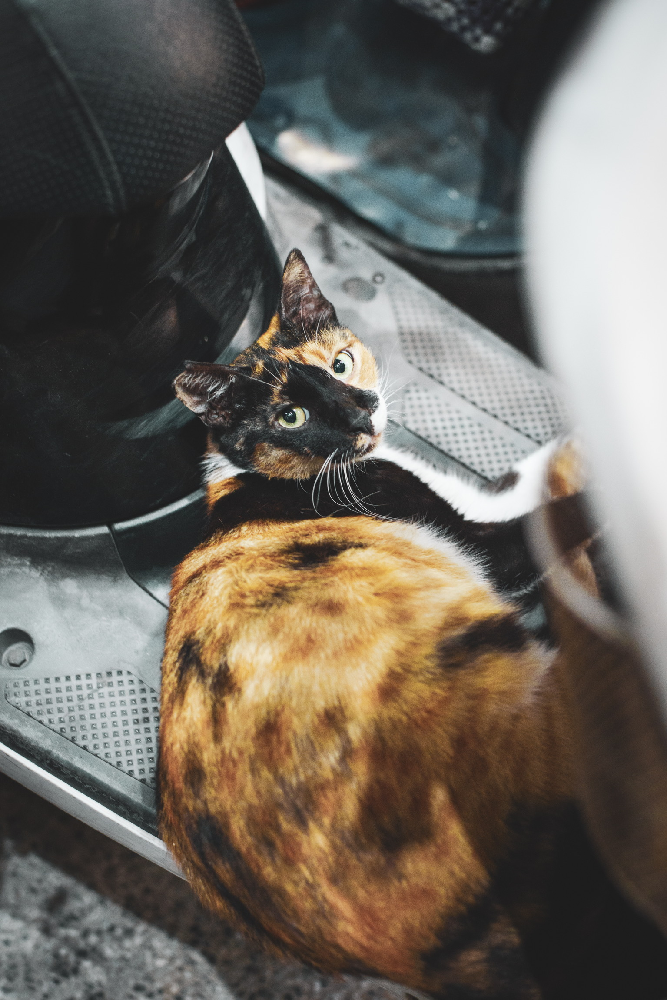Date:Unknown 在機車腳踏墊上的米克斯。
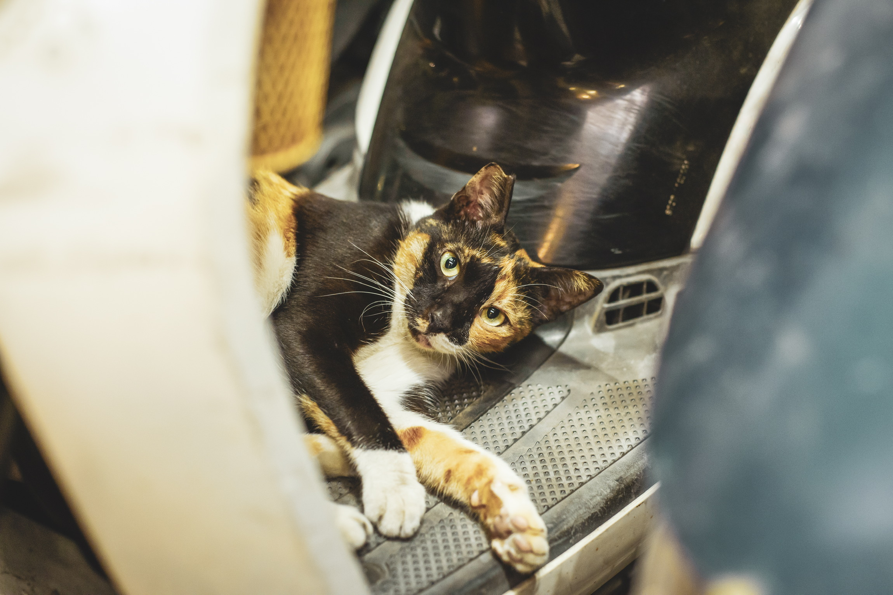
 Date:Unknown 會擺Pose的黑貓。
Date:Unknown 會擺Pose的黑貓。


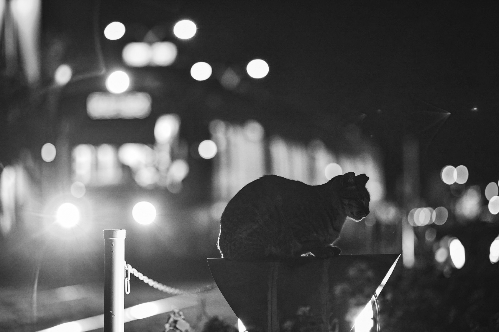Date:Unknown 偶要睡著了啦。
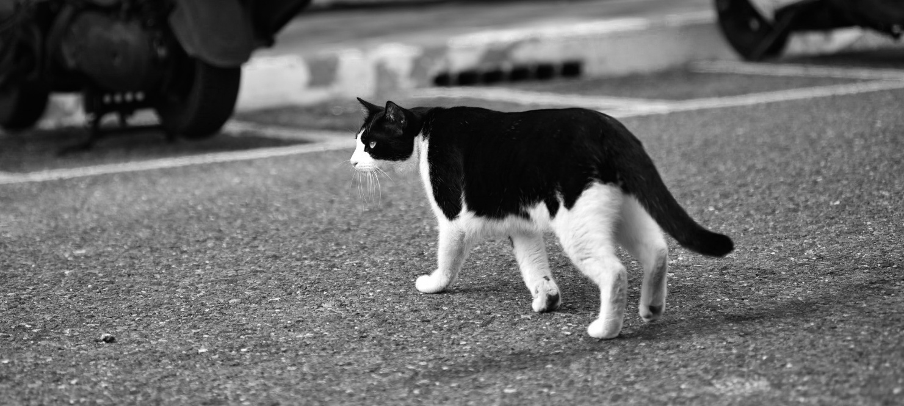Date:Unknown Just walking。